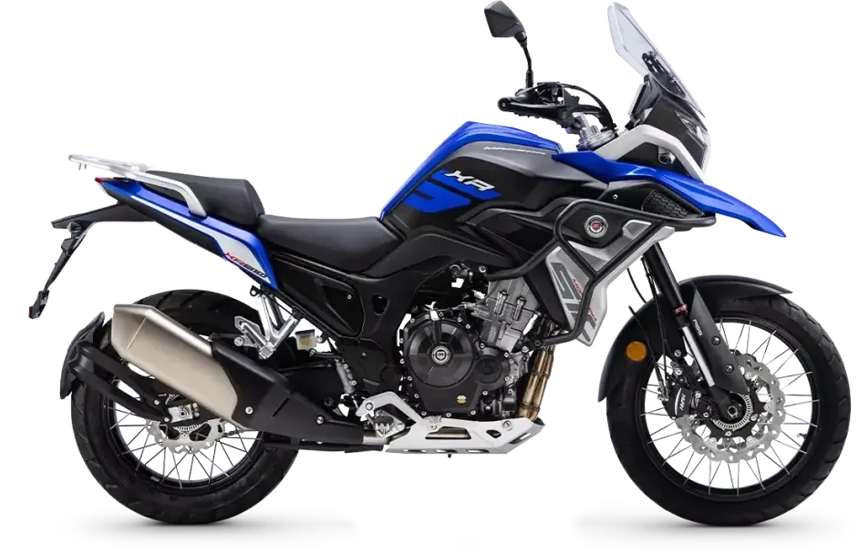
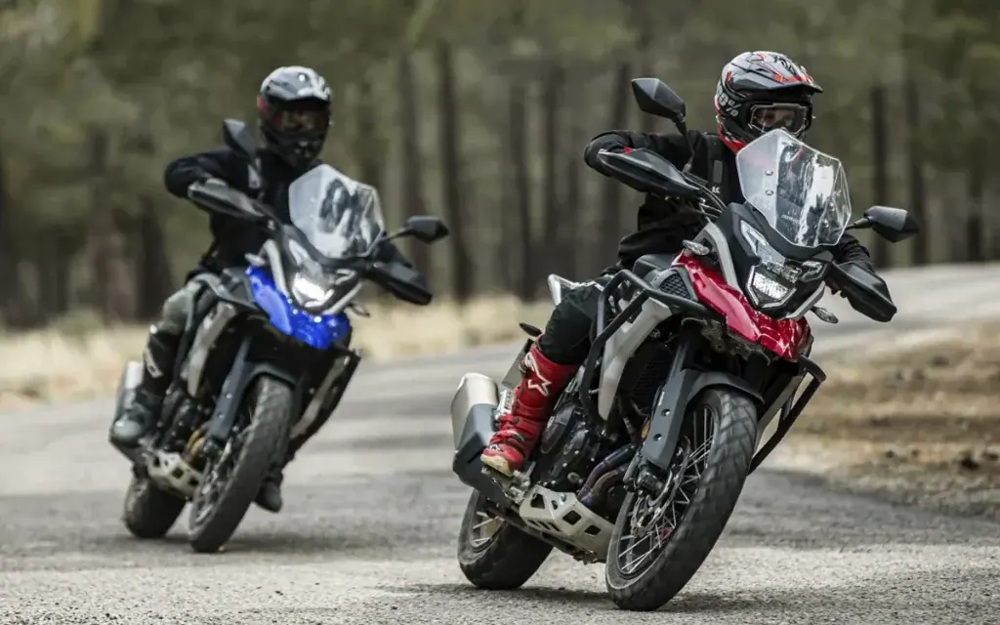
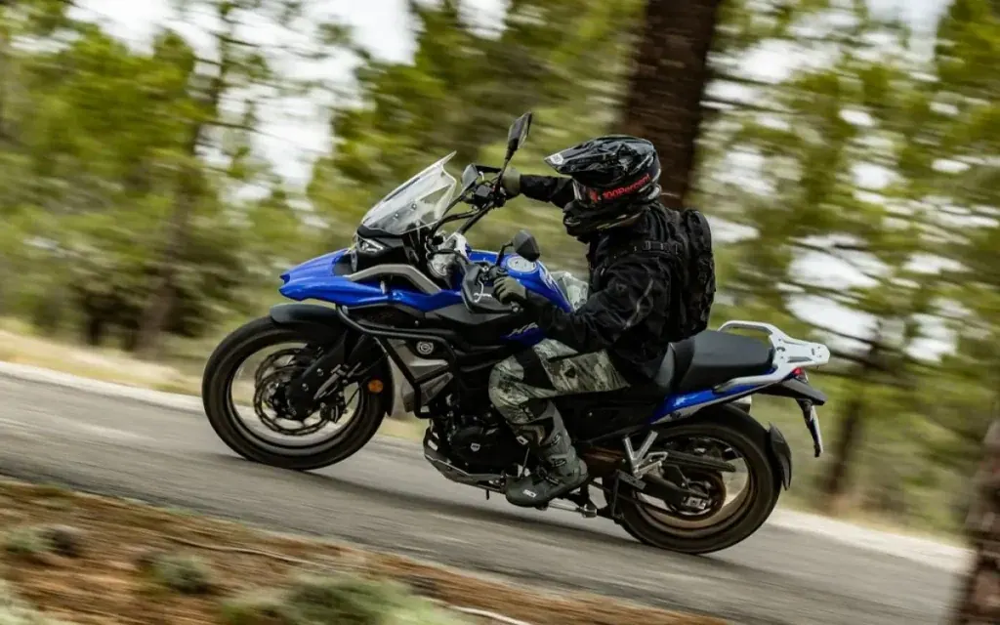
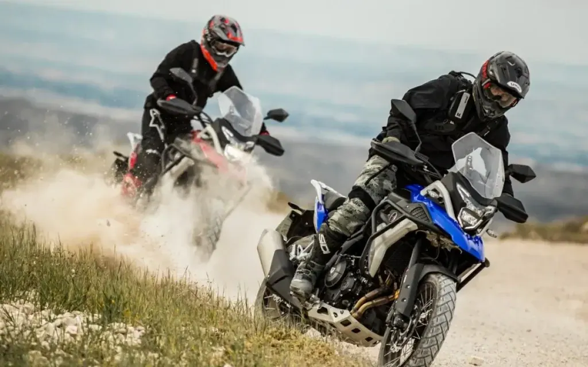
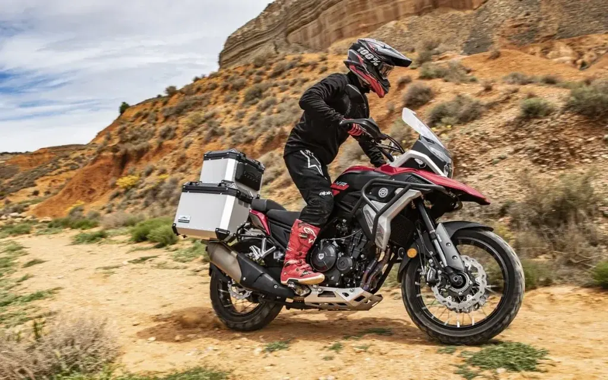

QJ Motor
SRT 450RX
A2 450 cc · 35 kW · Adventure
Propuesta de OpsPilot para Expomoto Córdoba, en revisión. No es la web oficial: expomotocordoba.es
Inicio › Motos › Macbor › Montana XR5 510

Macbor
Precio y financiación: te los damos al momento por teléfono (pendientes de publicar en la web).




Bienvenido a la aventura con la Montana XR5 510: más polivalente y mejor equipada.
La Montana XR5 llega ahora renovada con un motor más potente y mejor equipada . La Trail bicilíndria de Macbor llega para hacerte vivir un sinfín de aventuras allí donde quieras vivirlas. Equipa un motor de 499cc , una pantalla TFT con conectividad mirroring, iluminación Full LED , refrigeración líquida , embrague anti-rebote , inyección electrónica BOSCH , suspensiones KYB multi-ajustables , sistema ABS desconectable en 3 modos, protecciones anticaída incluidas de serie, además de llegar con nuevos colores que no dejarán indiferentes a nadie. La nueva Montana XR5 510 es la moto perfecta para quien quiere adentrarse y disfrutar de rutas y viajes, ya sea solo o acompañado, por pista o carretera, y a lomos de una moto con excelente rendimiento y prestaciones de alta calidad. La Montana XR5 510 es muy ligera , fácilmente maniobrable , apta para carnet A2 y polivalente tanto para tus salidas on road como off road . Si buscas más emociones, más aventuras y más diversión ¡la Montana XR5 510 está hecha para tí!
| Motor | Bicilíndrico de 4 tiempos |
|---|---|
| Cilindrada | 498,4 cc |
| Diámetro por carrera | 72×61,2 mm |
| Ratio | 10,6:1 |
| Alimentación | Inyección Electrónica – BOSCH (2 mpas: ECO/SPORT) |
| Encendido | Electrónico – BOSCH |
| Arranque | Eléctrico |
| Potencia | 35kW (46,94 CV) / 8.500 rpm |
| Par motor | 45 Nm / 7000 rpm |
| Capacidad | 20 L |
| Dimensiones | 2200 x 935 x 1400 mm (largo x ancho x alto) |
| Altura Asiento | 841 mm (820 opcional) |
| Peso Vacío | 178 Kg |
| Distancia entre ejes | 1479 mm |
| Distancia mínima al suelo | 211 mm |
| Embrague | Embrague anti-rebote |
| Transmisión Final | Cadena con retenes (AFAM) |
| Caja de cambios | Manual de 6 velocidades |
| Neumático Delantero | Tubeless – 110 / 80 R-19 M/C 59V – Metzeler Tourance |
| Neumático Trasero | Tubeless – 150/70 R -17 M/C 69H – Metzeler Tourance |
| Suspensión Delantera | Horquilla invertida KYB 41mm. Multi-ajustable (Precarga, Compresión y Extensión) |
| Suspensión Trasera | Basculante de Aluminio con Monoamortiguador KYB multi-ajustable (Precarga, Compresión y Extensión). Depósito separado y Sistema Progresivo mediante Bieletas. Recorrido 210 mm |
| Freno | Delantero: Doble disco Flotante 298 mm. Pinzas Nissin doble pistón.Trasero: Disco 240 mm. Pinza Nissin simple pistón. |
| ABS | Desconectable 3 modos: rueda trasera desconectada / ambas desconectadas / full ABS |
| Instrumentos | TFT 5» digital con conectividad mirroring |
| Faro | Full LED |
| Piloto Trasero | Full LED |
| Colores | Azul, blanco, negro y rojo |
Datos de la marca, tal como se publican en expomotocordoba.es.